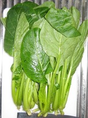

漬け菜の生産量 都道府県ランキング
全22都道府県の順位と収穫量
漬け菜の収穫量が全国で最も多いのは長野県で、1万6,500 tです。全国（2万5,400 t）の65%を占めます。

| 順位 | 都道府県 | 収穫量 | 全国に占める割合 |
|---|---|---|---|
| 1位 | 長野県 | 1万6,500 t | 65% |
| 2位 | 長崎県 | 1,670 t | 6.6% |
| 3位 | 熊本県 | 1,600 t | 6.3% |
| 4位 | 鹿児島県 | 1,100 t | 4.3% |
| 5位 | 福岡県 | 721 t | 2.8% |
| 6位 | 広島県 | 694 t | 2.7% |
| 7位 | 新潟県 | 653 t | 2.6% |
| 8位 | 山梨県 | 461 t | 1.8% |
| 9位 | 大阪府 | 378 t | 1.5% |
| 10位 | 徳島県 | 301 t | 1.2% |
| 11位 | 群馬県 | 284 t | 1.1% |
| 12位 | 神奈川県 | 278 t | 1.1% |
| 13位 | 滋賀県 | 212 t | 0.8% |
| 14位 | 和歌山県 | 181 t | 0.7% |
| 15位 | 佐賀県 | 151 t | 0.6% |
| 16位 | 奈良県 | 92 t | 0.4% |
| 17位 | 京都府 | 56 t | 0.2% |
| 18位 | 香川県 | 56 t | 0.2% |
| 19位 | 埼玉県 | 27 t | 0.1% |
| 20位 | 静岡県 | 6 t | 0.0% |
| 21位 | 三重県 | 4 t | 0.0% |
| 22位 | 千葉県 | 1 t | 0.0% |
漬け菜の生産量の推移（令和2年産〜令和6年産）
全国の収穫量は、令和2年産の4万3,700 tから令和6年産の2万5,400 tへ、42%減りました。期間中、1位は一貫して長野県です。
| 年 | 全国 | 1位 | 2位 | 3位 |
|---|---|---|---|---|
| 令和6年産 | 2万5,400 t | 長野県1万6,500 t | 長崎県1,670 t | 熊本県1,600 t |
| 令和4年産 | 3万3,700 t | 長野県2万1,700 t | 広島県2,370 t | 熊本県1,920 t |
| 令和2年産 | 4万3,700 t | 長野県2万5,600 t | 徳島県5,980 t | 広島県2,550 t |
この数字について
- 分類：アブラナ科
- 全国の収穫量：2万5,400 t
- この数字が表すもの：収穫量（収穫された重量）
- 調査：地域特産野菜生産状況調査 令和6年産
- 22県分を調査（調査していない県は順位に入りません）
漬け菜の生産量について、よくある質問
- 漬け菜の生産量が日本一の都道府県はどこですか？
- 長野県です。地域特産野菜生産状況調査（令和6年産）で1万6,500 tでした。
- 漬け菜の生産量ランキング2位・3位はどこですか？
- 2位は長崎県（1,670 t）、3位は熊本県（1,600 t）です。
- 漬け菜の生産量ランキング4位・5位はどこですか？
- 4位は鹿児島県（1,100 t）、5位は福岡県（721 t）です。漬け菜の全22県の順位は上の表のとおりです。
- 漬け菜の全国の生産量はどれくらいですか？
- 2万5,400 t（令和6年産）です。